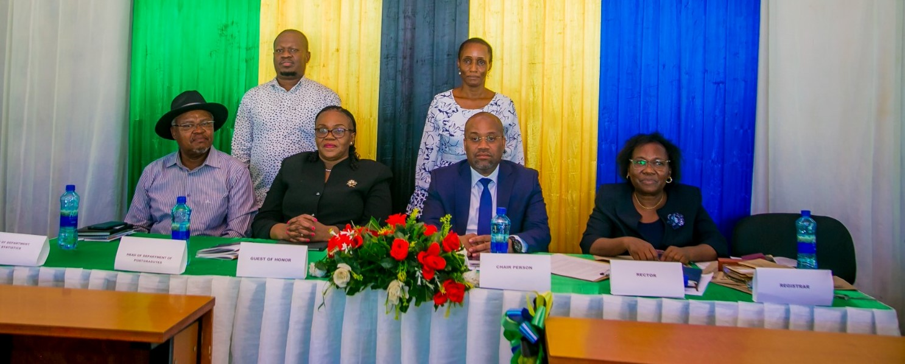
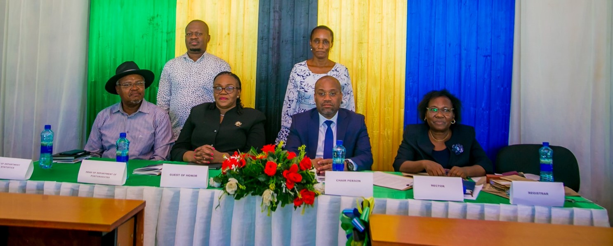

Eastern Africa Statistical and Training Center(EASTC) is deligated to announce the upcoming 6th 2024 Convocation Ceremony,A momentous occasion where we celebrate the achievements of our exceptional graduate.We cordially invite
all University staff,Graduating students,and Esteemed guest to join us on commemorating this significants events.
THEME OF 7th ANNUAL MEETING CONVOCATION "The role of official Statistics and big data in economic transformation and sustainable development in Tanzania"
GUEST OF HONOR Will be announced
VENUE Convocation Ceremony will be held in FUNCTION HALL at EASTC compus-Dar es salaam Bigining at 09:00 AM Date will be announced


 
